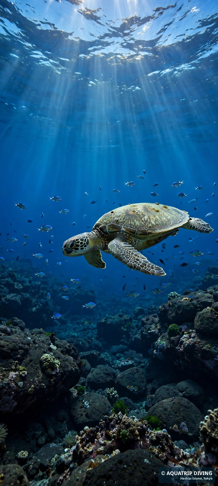
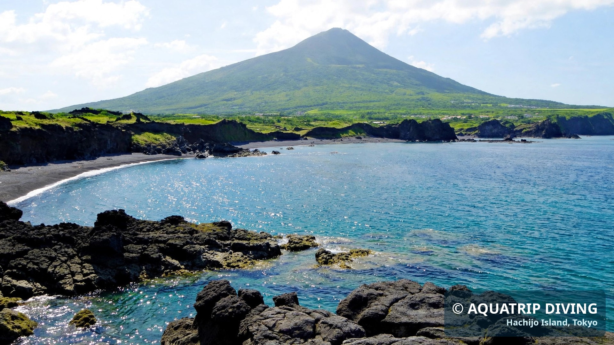
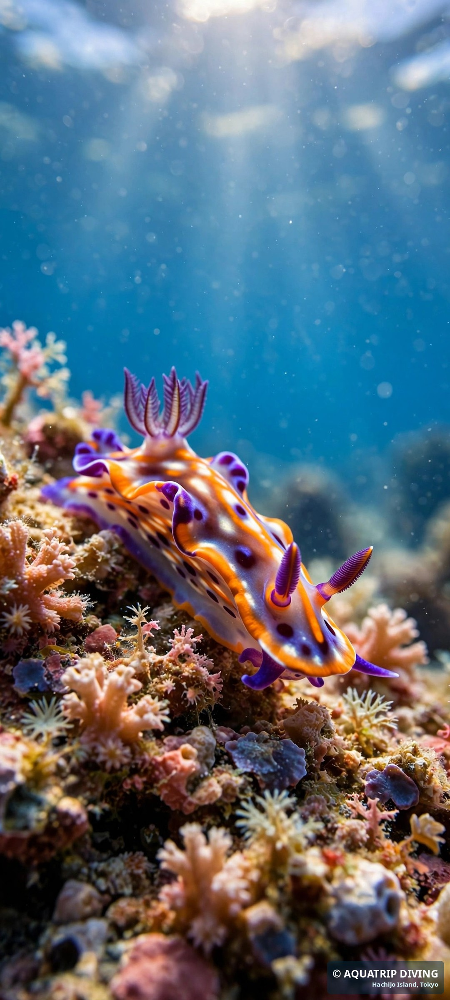

🌊AQUATRIP DIVING
← トップへWALLPAPER DOWNLOAD
八丈島の海を、
壁紙に。
八丈島の海の雰囲気を描いた新しい壁紙です。スマホ用とパソコン用をご用意しました。個人で楽しむ範囲でご自由にどうぞ。
📱 スマホ用｜ウミガメと黒潮の海

ダウンロード💻 パソコン用｜八丈富士と底土の海

ダウンロード📱 スマホ用｜ウミウシ（おまけ）

ダウンロード※ これらの画像はAIで生成したイメージです。実際の八丈島の風景・生物そのものではありません。画像には「© AQUATRIP DIVING」のクレジットが入っています。再配布・販売はご遠慮ください。
トップページへ戻る